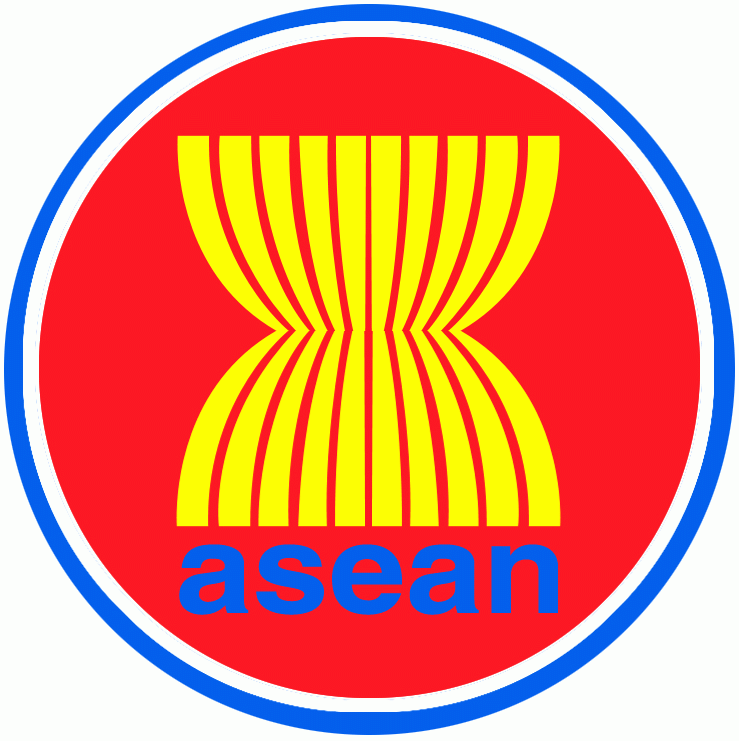

ตราสัญลักษณ์และธงอาเซียน

สัญลักษณ์อาเซียน
ตราสัญลักษณ์อาเซียนเป็นรูปมัดรวงข้าวสีเหลืองบนพื้นวงกลมสีแดงล้อมรอบด้วยวงกลมสีขาวและสีน้ำเงิน
รวงข้าวสีเหลือง 10 ต้นมัดรวมกันไว้ หมายถึง ประเทศในภูมิภาคเอเชียตะวันออกเฉียงใต้ทั้ง 10 ประเทศรวมกัน เพื่อมิตรภาพและความเป็นน้ำหนึ่งใจเดียวกัน
วงกลม เป็นสัญลักษณ์แสดงถึงเอกภาพของอาเซียน ตัวอักษรคำว่า asean สีน้ำเงิน อยู่ใต้ภาพรวงข้าว แสดงถึงความมุ่งมั่นที่จะทำงานร่วมกันเพื่อความมั่นคง สันติภพ เอกภาพ และความก้าวหน้าของประเทศสมาชิกอาเซียน
สีเหลือง หมายถึง ความเจริญรุ่งเรือง
สีแดง หมายถึง ความกล้าหาญและการมีพลวัติ
สีขาว หมายถึง ความบริสุทธิ์
สีน้ำเงิน หมายถึง สันติภาพและความมั่นคง

ธงอาเซียน
ธงอาเซียนเป็นธงพื้นสีน้ำเงินมีดวงตราอาเซียนอยู่ตรงกลางแสดงถึงเสถียรภาพสันติภาพความสามัคคีและพลวัตของอาเซียน สีของธงประกอบด้วย สีน้ำเงิน สีแดง สีขาว และสีเหลืองซึ่งเป็นสีหลักในธงชาติของบรรดาประเทศสมาชิกของอาเซียนทั้งหมด